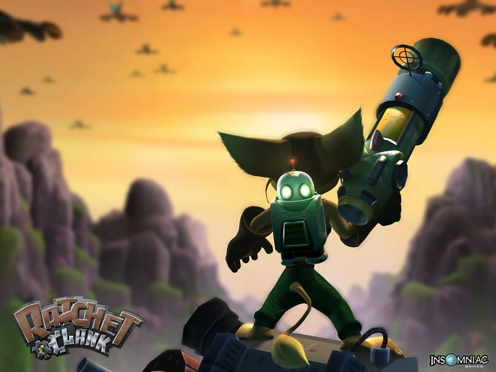
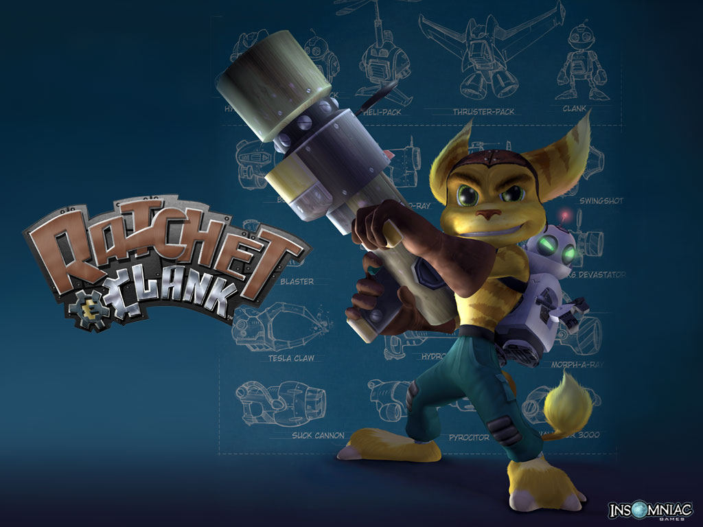
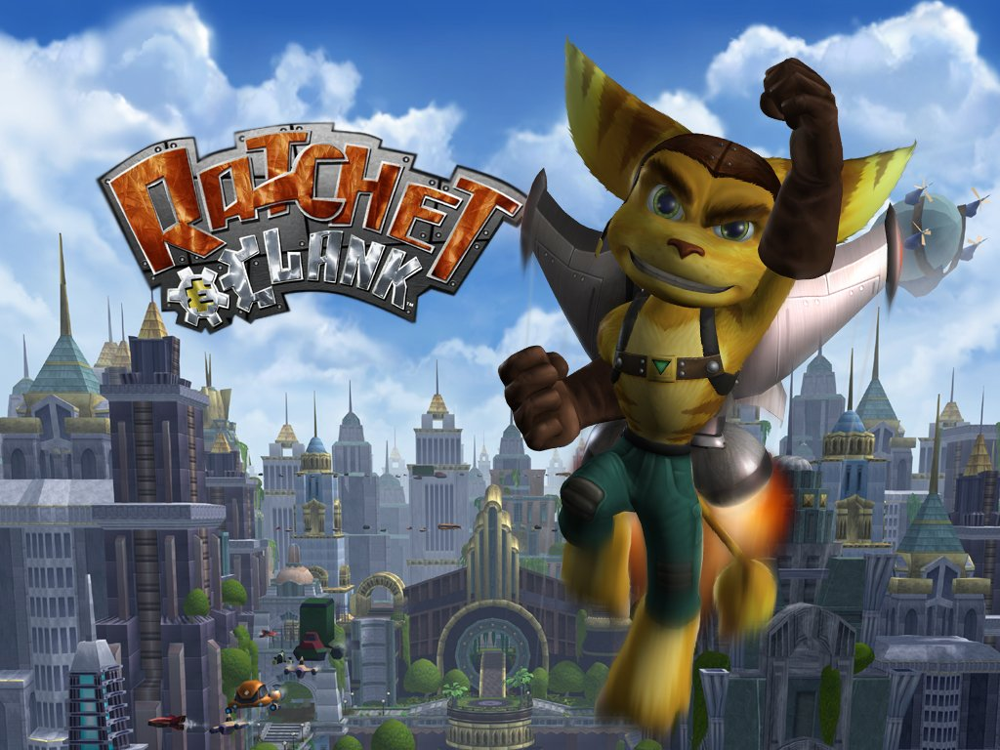
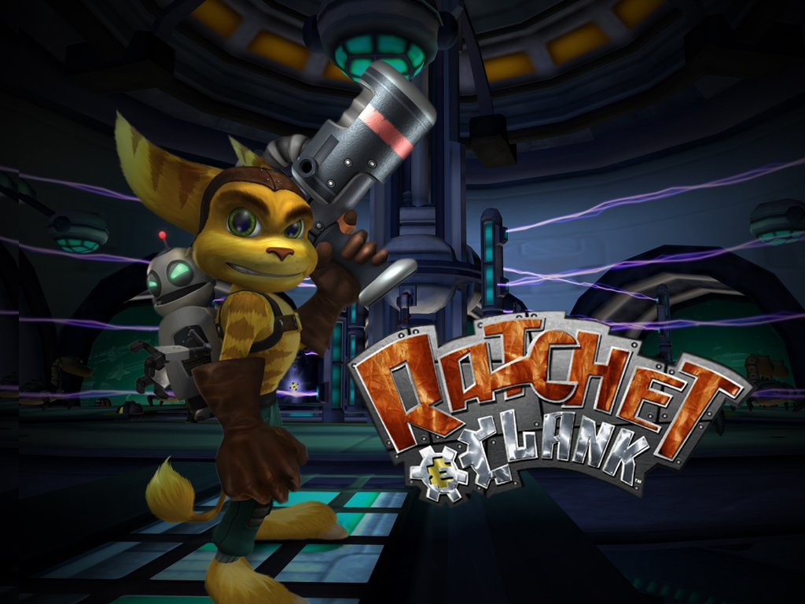
Ratchet & Clank es un videojuego de plataformas y acción lanzado en 2002 para PlayStation 2, desarrollado
por Insomniac Games. La historia se sitúa en una galaxia futurista llena de planetas y razas
alienígenas. El protagonista es Ratchet, un lombax mecánico e ingenioso que vive aislado en el planeta
Veldin. Su vida cambia cuando conoce a Clank, un pequeño robot que escapa de una fábrica controlada por
el villano Chairman Drek.
Clank descubre que Drek planea destruir planetas para crear uno nuevo solo
para su especie, utilizando piezas arrancadas de mundos habitados. Al darse cuenta del peligro, Ratchet
decide ayudar a Clank a detenerlo, iniciando una aventura intergaláctica. A lo largo del juego, ambos
viajan por distintos planetas, conocen nuevos aliados y se enfrentan a numerosos enemigos, mientras su
relación evoluciona de una simple conveniencia a una verdadera amistad.
El juego destacó por su
humor, su variedad de armas creativas y su mundo colorido, sentando las bases de una saga muy querida
dentro del catálogo de PlayStation.




Ratchet & Clank 2, lanzado en 2003 para PlayStation 2, continúa la historia tras la derrota del Chairman
Drek. En esta ocasión, Ratchet y Clank son reclutados por Abercrombie Fizzwidget, el excéntrico CEO de
la empresa Megacorp, para recuperar un misterioso experimento robado por una criatura llamada Protopet.
La aventura se desarrolla en la galaxia Bogon, un nuevo sistema lleno de planetas variados y
peligrosos.
Durante la misión, los protagonistas descubren que el Protopet, creado originalmente como
una mascota inofensiva, se transforma en un monstruo destructivo al exponerse a un líquido llamado
“mutación”. Este fallo convierte al experimento en una amenaza para toda la galaxia. Mientras avanzan,
Ratchet lucha con su deseo de fama y éxito, ya que Megacorp lo presenta como un héroe mediático, lo que
genera tensiones entre él y Clank.
A lo largo del juego, la dupla enfrenta ejércitos de robots y
mercenarios, mejora su arsenal y fortalece su amistad. Ratchet & Clank 2 amplió las mecánicas del
original, ofreciendo una narrativa más profunda y consolidando la saga como una de las más importantes
de PlayStation.
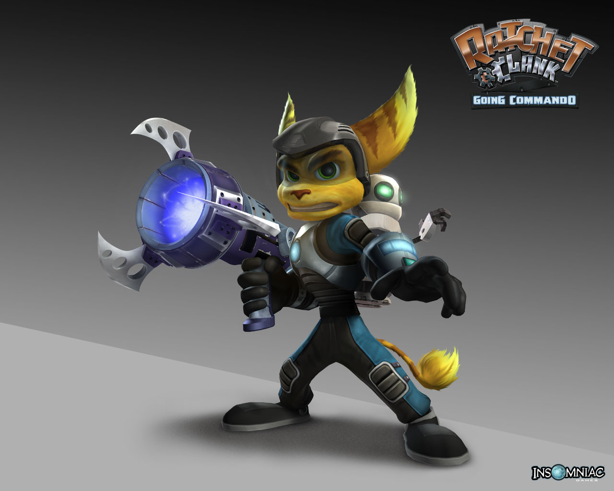
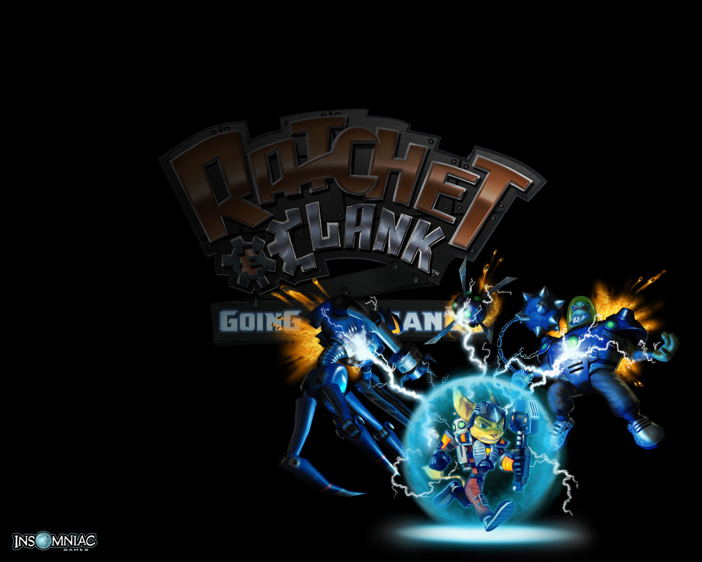
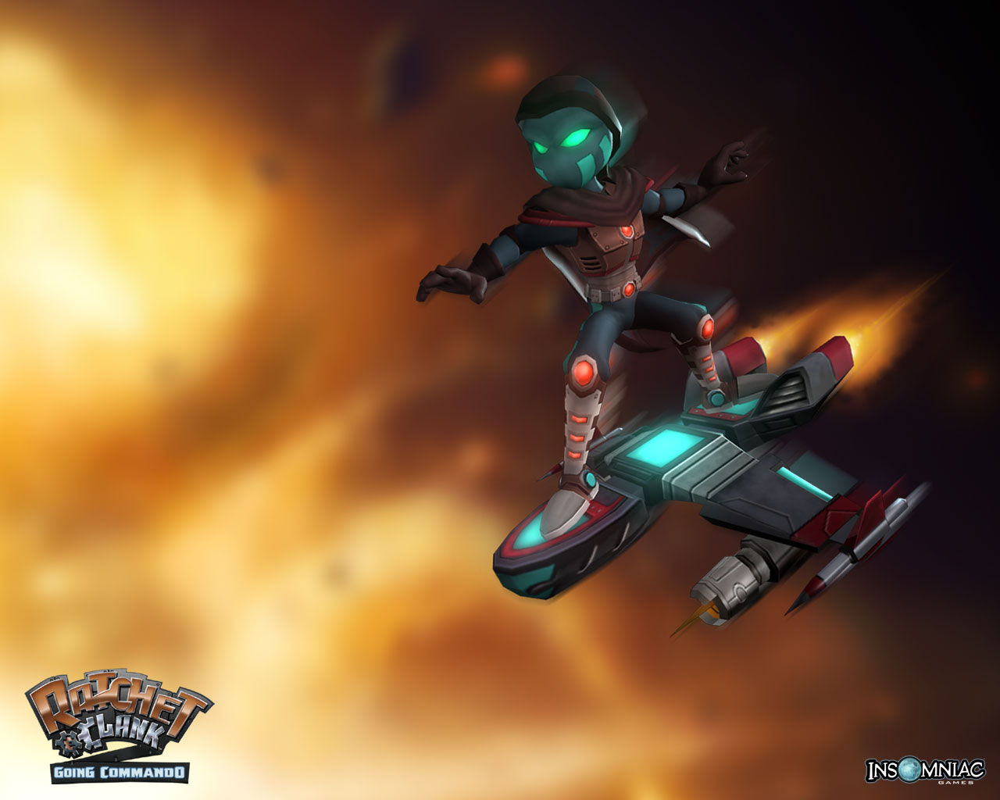
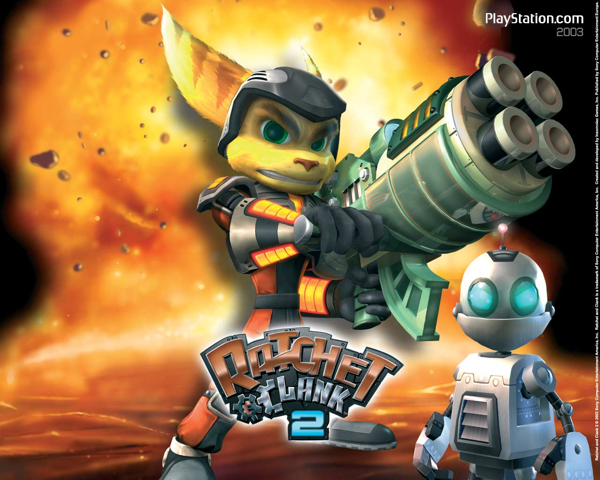
Ratchet & Clank 3, lanzado en 2004 para PlayStation 2, es considerado por muchos fans como el mejor juego
de la saga original. La historia comienza cuando el malvado Dr. Nefarious, un villano robótico
obsesionado con eliminar a toda forma de vida orgánica, amenaza la galaxia Solana con su enorme flota de
robots. Para detenerlo, Ratchet, Clank y el Capitán Qwark son reclutados por los Rangers Galácticos, un
grupo de élite encargado de defender la galaxia.
A lo largo de la aventura, los protagonistas viajan
por distintos planetas para debilitar el ejército de Nefarious, liberar mundos conquistados y recuperar
el control de la situación. El juego combina acción intensa con humor constante, destacando
especialmente la personalidad exagerada de sus personajes y las escenas cinematográficas.
Además de
la campaña principal, Ratchet & Clank 3 introdujo el modo multijugador y amplió el sistema de armas,
haciéndolas más caóticas y espectaculares. Su ritmo rápido, historia entretenida y mejoras jugables
consolidaron a Up Your Arsenal como uno de los títulos más memorables de PlayStation 2.
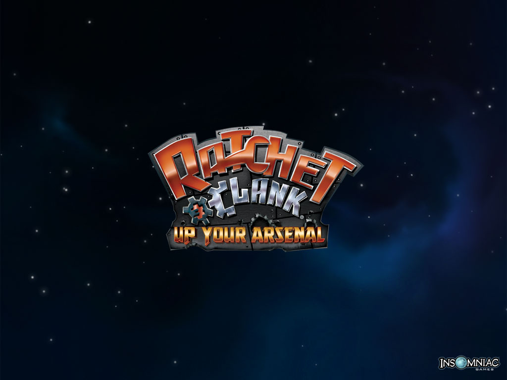
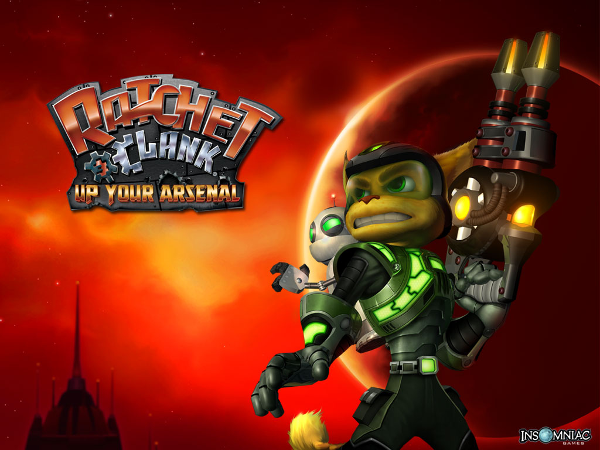
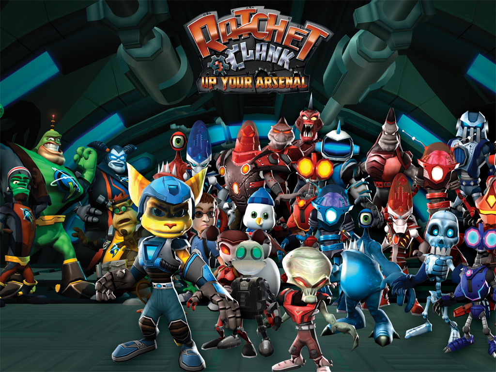
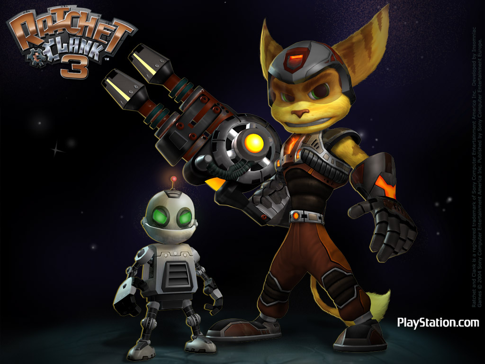
Ratchet & Clank: Rift Apart, lanzado en 2021 para PlayStation 5, representa el regreso triunfal de la
saga con una historia que combina nostalgia y novedades. El juego comienza cuando el Dr. Nefarious
utiliza el Dimensionator, un dispositivo capaz de abrir portales entre dimensiones, provocando una
catástrofe que fragmenta la realidad. Como consecuencia, Ratchet y Clank quedan separados y atrapados en
dimensiones alternativas.
Durante la aventura, los jugadores conocen a Rivet, una lombax de otra
dimensión que lucha contra una versión aún más peligrosa de Nefarious, quien ha conquistado su universo.
Junto a Rivet y su compañera Kit, la historia explora temas como la identidad, el miedo al fracaso y la
importancia de la confianza.
A través de saltos dimensionales instantáneos, los protagonistas viajan
entre mundos espectaculares y llenos de acción, aprovechando el poder técnico de la consola. Rift Apart
destaca por su narrativa más emocional, su humor característico y su impresionante apartado visual,
consolidándose como uno de los mejores juegos de la franquicia y una evolución moderna de Ratchet &
Clank.
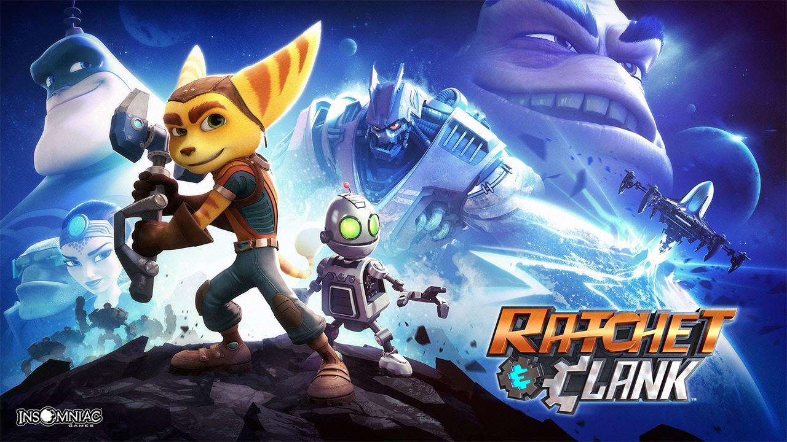
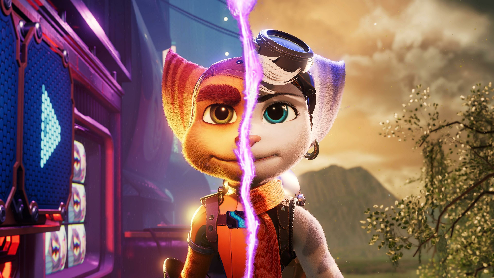
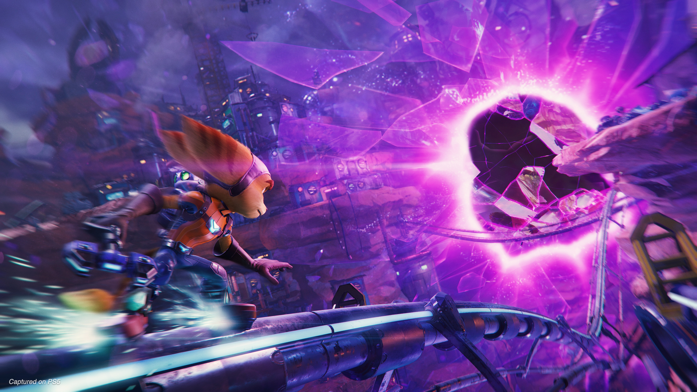
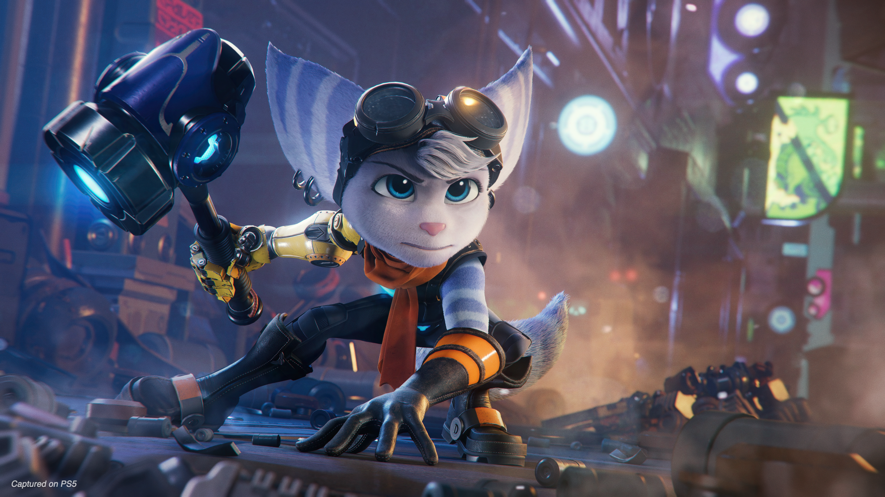